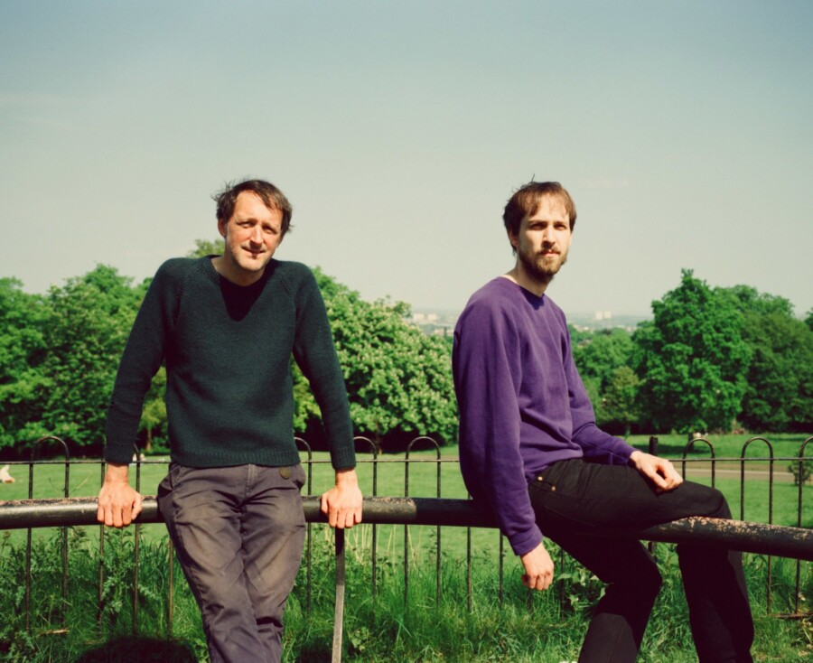

Fredrik Rasten, Alasdair Roberts
This is a two-part program. First, Fredrik Rasten will present a solo set from 6–7pm. After an intermission, Roberts and Rasten will present a duo set from 8–9pm. Each set requires a separate RSVP; those wishing to attend both should register for both.
Fredrik Rasten is a guitarist and composer based in Oslo and Berlin. He is primarily focusing on musical exploration of just intonation and related sound phenomena, and in his work he is reaching for an actively listening state wherein to intuitively explore the complexities of tone and harmony. On the guitar he is applying real time retuning of the instrument, vocal shadings and different preparations to create warm and fluctuating resonances.
As a composer he is mostly creating music for smaller ensembles and collaborative projects where the ongoing exploration of pitch relations is guiding the work, while also finding inspiration in early music, folk traditions and reductionist expressions. Other elements influencing his work include ideas of music as social, non-hierarchical practices, and essential philosophical conundrums, such as the elusive relationship between mind and matter.
The Scottish/Norwegian duo of Alasdair Roberts and Fredrik Rasten fuses their respective work with traditional music, folk song and experimental minimalism. Their first encounter was in the septet ‘Alasdair Roberts og Völvur’, which released the LP The Old Fabled River on Drag City Records in 2021, featuring Roberts-originals and a blend of Scottish and Norwegian traditional songs. In duo, Roberts and Rasten have so far focused on traditional Scottish narrative ballads, often with long durations, and where slowly evolving musical materials build up throughout the strophic verse-structure to emphasize the storytelling. The duo employs both field recordings and printed sources of traditional song as the basis of their interpretations, often evolving new original compositions and always resulting in a meeting point between time-honored and contemporary forms of musical expression. Roberts and Rasten choose ballads with care, favoring time-transcending narrative themes that both bear witness to the day and age of their origin and are relevant to our times, be it politically, culturally or ethically. Both musicians sing and play a variety of instruments, Roberts’ clear and unadorned vocal delivery blending with Rasten’s sensibilities of just intonation tuning and timbral qualities of sound. This concert in Bond Chapel marks the duo’s debut U.S. performance.
Fredrik Rasten and Alasdair Roberts is co-presented with Frequency Festival Chicago and the Gray Center for Arts & Inquiry.